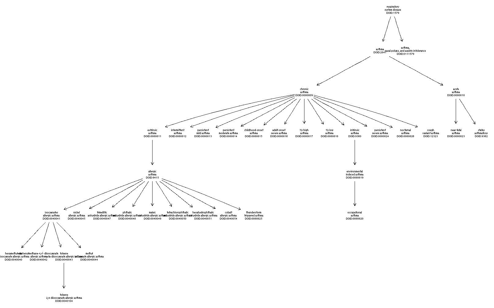

vignettes/ontoProc.Rmd
ontoProc.RmdThe ambitions of collaborative single cell biology will only be achieved through the coordinated efforts of many groups, to help clarify cell types and dynamics in an array of functional and environmental contexts. The use of formal ontology in this pursuit is well-motivated and research progress has already been substantial.
Bakken et al. (2017) discuss “strategies for standardized cell type representations based on the data outputs from [high-content flow cytometry and single cell RNA sequencing], including ‘context annotations’ in the form of standardized experiment metadata about the specimen source analyzed and marker genes that serve as the most useful features in machine learning-based cell type classification models.” Aevermann et al. (2018) describe how the FAIR principles can be implemented using statistical identification of necessary and sufficient conditions for determining cell class membership. They propose that Cell Ontology can be transformed to a broadly usable knowledgebase through the incorporation of accurate marker gene signatures for cell classes.
In this vignette, we review key concepts and tasks required to make progress in the adoption and application of ontological discipline in Bioconductor-oriented data analysis.
We’ll start by setting up some package attachments and ontology objects.
library(ontoProc)
library(ontologyPlot)
library(BiocStyle) # for package references
cl = getOnto("cellOnto", "2023") # for continuity -- has_high_plasma_membrane_amount: list
go = getOnto("goOnto", "2023") # if updated, some assertions will fail...
pr = getOnto("PROnto", "2023") # important case changeThe following table describes the most up-to-date resources available with getOnto.
| name | nclass | nprop | nroots | datav |
|---|---|---|---|---|
| caro | 751 | 57 | 30 | caro/releases/2022-02-18/caro-full.owl |
| cellLineOnto | 43596 | 204 | 110 | NA |
| cellOnto | 17371 | 229 | 102 | releases/2023-02-15 |
| cellosaurus | 144570 | NA | 144571 | 44.0 |
| chebi_full | 163735 | 34 | 13 | 218 |
| chebi_lite | 163735 | 32 | 13 | 218 |
| diseaseOnto | 13680 | 26 | 3 | doid/releases/2023-01-30/doid-non-classified.obo |
| efoOnto | 40514 | 93 | 60 | http://www.ebi.ac.uk/efo/releases/v3.51.0/efo.owl |
| goOnto | 47427 | 41 | 10 | releases/2023-01-01 |
| hcaoOnto | 22821 | 259 | 161 | releases/2022-12-16/hcao.owl |
| mondo | 44707 | 249 | 116 | releases/2022-08-01 |
| patoOnto | 2813 | 45 | 16 | releases/2022-12-15/pato.obo |
| PROnto | 334873 | 48 | 49 | 68.0 |
| uberon | 25836 | 245 | 138 | releases/2023-02-14 |
| Pronto | 315957 | 6 | 53 | 57.0 |
Other resources are listed in packDesc202x and packDesc2019.
Definitions, semantics. For concreteness, we provide some definitions and examples. We use ontology to denote the systematic organization of terminology used in a conceptual domain. The Cell Ontology is a graphical data structure with carefully annotated terms as nodes and conventionally defined semantic relationships among terms serving as edges. As an example, lung ciliated cell has URI . This URI includes a fixed-length identifier CL_1000271 with unambiguous interpretation wherever it is encountered. There is a chain of relationships from lung ciliated cell up through ciliated cell, then native cell, then cell, each possessing its own URI and related interpretive metadata. The relationship connecting the more precise to the less precise term in this chain is denoted SubclassOf. Ciliated cell is equivalent to a native cell that has plasma membrane part cilium. Semantic characteristics of terms and relationships are used to infer relationships among terms that may not have relations directly specified in available ontologies.
Barriers to broad adoption. Given the wealth of material available in biological ontologies, it is somewhat surprising that formal annotation is so seldom used in practice. Barriers to more common use of ontology in data annotation include: (i) Non-existence of exact matching between intended term and terms available in ontologies of interest. (ii) The practical problem of decoding ontology identifiers. A GO tag or CL tag is excellent for programming, but it is clumsy to co-locate with the tag the associated natural language term or phrase. (iii) Likelihood of disagreement of suitability of terms for conditions observed at the boundaries of knowledge. To help cope with the first of these problems, Bioconductor’s ontologyProc package includes a function liberalMap which will search an ontology for terms lexically close to some target term or phrase. The second problem can be addressed with more elaborate data structures for variable annotation and programming in R, and the third problem will diminish in importance as the value of ontology adoption becomes manifest in more applications.
Class vs. instance. It is important to distinguish the practice of designing and maintaining ontologies from the use of ontological class terms to annotate instances of the concepts. The combination of an ontology and a set of annotated instances is called a knowledge base. To illustrate some of the salient distinctions here, consider the cell line called A549, which is established from a human lung adenocarcinoma sample. There is no mention of A549 in the Cell Ontology. However, A549 is present in the EBI Experimental Factor Ontology as a subclass of the “Homo sapiens cell line” class. Presumably this is because A549 is a class of cells that are widely used experimentally, and this cell line constitutes a concept deserving of mapping in the universe of experimental factors. In the universe of concepts related to cell structure and function per se, A549 is an individual that can be characterized through possession of or lack of properties enumerated in Cell Ontology, but it is not deserving of inclusion in that ontology.
The 10X Genomics corporation has distributed a dataset on results of sequencing 10000 PBMC from a healthy donor . Subsets of the data are used in tutorials for the Seurat analytical suite (Butler et al. (2018)).
One result of the tutorial analysis of the 3000 cell subset is a table of cell types and expression-based markers of cell identity. The first three columns of the table below are from concluding material in the Seurat tutorial; the remaining columns are created by “manual” matching between the Seurat terms and terms found in Cell Ontology.
kable(stab <- seur3kTab())| grp | markers | seurTutType | formal | tag |
|---|---|---|---|---|
| 0 | IL7R | CD4 T cells | CD4-positive helper T cell | CL:0000492 |
| 1 | CD14, LYZ | CD14+ Monocytes | CD14-positive monocyte | CL:0001054 |
| 2 | MS4A1 | B cells | B cell | CL:0000236 |
| 3 | CD8A | CD8 T cells | CD8-positive, alpha-beta T cell | CL:0000625 |
| 4 | FCGR3A, MS4A7 | FCGR3A+ Monocytes | monocyte | CL:0000576 |
| 5 | GNLY, NKG7 | NK cells | natural killer cell | CL:0000623 |
| 6 | FCER1A, CST3 | Dendritic Cells | dendritic cell | CL:0000451 |
| 7 | PPBP | Megakaryocytes | megakaryocyte | CL:0000556 |
Given the informally selected tags in the table above, we can sketch the Cell Ontology graph connecting the associated cell types. The ontoProc package adds functionality to ontologyPlot with make_graphNEL_from_ontology_plot. This allows use of all Rgraphviz and igraph visualization facilities for graphs derived from ontology structures.
Here we display the PBMC cell sets reported in the Seurat tutorial.
## loading from cache
onto_plot2(cl, stab$tag)The CLfeats function traces relationships and properties from a given Cell Ontology class. Briefly, each class can assert that it is the intersection_of other classes, and has_part, lacks_part, has_plasma_membrane_part, lacks_plasma_membrane_part can be asserted as relationships holding between cell type instances and cell components. The components are often cross-referenced to Protein Ontology or Gene Ontology. When the Protein Ontology component has a synonym for which an HGNC symbol is provided, that symbol is retrieved by CLfeats. Here we obtain the listing for a mature CD1a-positive dermal dendritic cell.
suppressMessages({
kable(CLfeats(cl, "CL:0002531", pr=pr, go=go))
})| tag | prtag | cond | entity | SYMBOL | name |
|---|---|---|---|---|---|
| CL:0000451 | PR:000001002 | lacksPMP | CD19 molecule | CD19 | dendritic cell |
| CL:0000451 | PR:000001003 | lacksPMP | CD34 molecule | CD34 | dendritic cell |
| CL:0000451 | PR:000001020 | lacksPMP | CD3 epsilon | CD3E | dendritic cell |
| CL:0000451 | PR:000001024 | lacksPMP | neural cell adhesion molecule 1 | NCAM1 | dendritic cell |
| CL:0000451 | PR:000001289 | lacksPMP | membrane-spanning 4-domains subfamily A member 1 | MS4A1 | dendritic cell |
| CL:0000451 | GO:0042613 | hasPart | MHC class II protein complex | NA | dendritic cell |
| CL:0000000 | GO:0005634 | hasPart | nucleus | NA | cell |
| CL:0000000 | GO:0005634 | hasPart | nucleus | NA | cell |
The ctmarks function starts a shiny app that generates tables of this sort for selected cell types.
ctmarks snapshot
The sym2CellOnto function helps find mention of given gene symbols in properties or parts of cell types.
kable(sdf <- as.data.frame(sym2CellOnto("ITGAM", cl, pr)))| sym | cond | cl | type |
|---|---|---|---|
| ITGAM | lacksPMP | CL:0000037 | hematopoietic stem cell |
| ITGAM | lacksPMP | CL:0000547 | proerythroblast |
| ITGAM | lacksPMP | CL:0000553 | megakaryocyte progenitor cell |
| ITGAM | lacksPMP | CL:0000558 | reticulocyte |
| ITGAM | lacksPMP | CL:0000611 | eosinophil progenitor cell |
| ITGAM | lacksPMP | CL:0000613 | basophil progenitor cell |
| ITGAM | lacksPMP | CL:0000765 | erythroblast |
| ITGAM | lacksPMP | CL:0000831 | mast cell progenitor |
| ITGAM | lacksPMP | CL:0000836 | promyelocyte |
| ITGAM | lacksPMP | CL:0000837 | hematopoietic multipotent progenitor cell |
| ITGAM | lacksPMP | CL:0000872 | splenic marginal zone macrophage |
| ITGAM | lacksPMP | CL:0000941 | thymic conventional dendritic cell |
| ITGAM | lacksPMP | CL:0000942 | thymic plasmacytoid dendritic cell |
| ITGAM | lacksPMP | CL:0000989 | CD11c-low plasmacytoid dendritic cell |
| ITGAM | lacksPMP | CL:0000998 | CD8_alpha-negative CD11b-negative dendritic cell |
| ITGAM | lacksPMP | CL:0001000 | CD8_alpha-positive CD11b-negative dendritic cell |
| ITGAM | lacksPMP | CL:0001029 | common dendritic progenitor |
| ITGAM | lacksPMP | CL:0001060 | hematopoietic oligopotent progenitor cell, lineage-negative |
| ITGAM | lacksPMP | CL:0001066 | erythroid progenitor cell, mammalian |
| ITGAM | lacksPMP | CL:0002010 | pre-conventional dendritic cell |
| ITGAM | lacksPMP | CL:0002089 | group 2 innate lymphoid cell, mouse |
| ITGAM | lacksPMP | CL:0002679 | natural helper lymphocyte |
table(sdf$cond)##
## lacksPMP
## 22
kable(as.data.frame(sym2CellOnto("FOXP3", cl, pr)))| sym | cond | cl | type |
|---|---|---|---|
| FOXP3 | hasPart | CL:0000902 | induced T-regulatory cell |
| FOXP3 | hasPart | CL:0000903 | natural T-regulatory cell |
| FOXP3 | hasPart | CL:0000919 | CD8-positive, CD25-positive, alpha-beta regulatory T cell |
| FOXP3 | hasPart | CL:0000920 | CD8-positive, CD28-negative, alpha-beta regulatory T cell |
The task of extending an ontology is partly bureaucratic in nature and depends on a collection of endorsements and updates to centralized information structures. In order to permit experimentation with interfaces and new content that may be quite speculative, we include an approach to combining new ontology ‘terms’ of structure similar to those endorsed in Cell Ontology, to ontologyIndex-based ontology_index instances.
For a demonstration, we consider the discussion in Bakken et al. (2017), of a ‘diagonal’ expression pattern defining a group of novel cell types. A set of genes is identified and cells are distinguised by expressing exactly one gene from the set.
Diagonal expression pattern.
The necessary information is collected in a vector. The vector is the set of genes, the name of element i is the tag to be associated with the type of cell that expresses gene i and does not express any other gene in the set.
sigels = c("CL:X01"="GRIK3", "CL:X02"="NTNG1", "CL:X03"="BAGE2",
"CL:X04"="MC4R", "CL:X05"="PAX6", "CL:X06"="TSPAN12",
"CL:X07"="hSHISA8", "CL:X08"="SNCG", "CL:X09"="ARHGEF28",
"CL:X10"="EGF")The cyclicSigset function produces a data.frame instance connecting cell types with the genes expressed or unexpressed.
cs = cyclicSigset(sigels)
dim(cs)## [1] 100 3
cs[c(1:5,9:13),]## gene type cond
## 1 ARHGEF28 CL:X09 hasExp
## 2 GRIK3 CL:X09 lacksExp
## 3 NTNG1 CL:X09 lacksExp
## 4 BAGE2 CL:X09 lacksExp
## 5 MC4R CL:X09 lacksExp
## 9 SNCG CL:X09 lacksExp
## 10 EGF CL:X09 lacksExp
## 11 BAGE2 CL:X03 hasExp
## 12 GRIK3 CL:X03 lacksExp
## 13 NTNG1 CL:X03 lacksExp
table(cs$cond)##
## hasExp lacksExp
## 10 90It is expected that a tabular layout like this will suffice to handle general situations of cell type definition.
The most complicated aspect of novel OBO term construction is the proper specifications of relationships with existing ontology components. A prolog that is mostly shared by all terms is generated programmatically for the diagonal pattern task.
makeIntnProlog = function(id, ...) {
# make type-specific prologs as key-value pairs
c(
sprintf("id: %s", id),
sprintf("name: %s-expressing cortical layer 1 interneuron, human", ...),
sprintf("def: '%s-expressing cortical layer 1 interneuron, human described via RNA-seq observations' [PMID 29322913]", ...),
"is_a: CL:0000099 ! interneuron",
"intersection_of: CL:0000099 ! interneuron")
}The ldfToTerms API uses this to create a set of strings that can be parsed as a term.
pmap = c("hasExp"="has_expression_of", lacksExp="lacks_expression_of")
head(unlist(tms <- ldfToTerms(cs, pmap, sigels, makeIntnProlog)), 20)## [1] "[Term]"
## [2] "id: CL:X01"
## [3] "name: GRIK3-expressing cortical layer 1 interneuron, human"
## [4] "def: 'GRIK3-expressing cortical layer 1 interneuron, human described via RNA-seq observations' [PMID 29322913]"
## [5] "is_a: CL:0000099 ! interneuron"
## [6] "intersection_of: CL:0000099 ! interneuron"
## [7] "has_expression_of: PR:000008242 ! GRIK3"
## [8] "lacks_expression_of: PR:000011467 ! NTNG1"
## [9] "lacks_expression_of: PR:000004625 ! BAGE2"
## [10] "lacks_expression_of: PR:000001237 ! MC4R"
## [11] "lacks_expression_of: PR:000012318 ! PAX6"
## [12] "lacks_expression_of: PR:000016738 ! TSPAN12"
## [13] "lacks_expression_of: PR:B8ZZ34 ! hSHISA8"
## [14] "lacks_expression_of: PR:000015325 ! SNCG"
## [15] "lacks_expression_of: PR:000013942 ! ARHGEF28"
## [16] "lacks_expression_of: PR:000006928 ! EGF"
## [17] "[Term]"
## [18] "id: CL:X02"
## [19] "name: NTNG1-expressing cortical layer 1 interneuron, human"
## [20] "def: 'NTNG1-expressing cortical layer 1 interneuron, human described via RNA-seq observations' [PMID 29322913]"The content in tms can then be appended to the content of the Cell Ontology cl.obo as text for import with ontologyIndex::get_OBO.
Aaron Lun has produced a mapping from informal terms used in the Human Primary Cell Atlas to Cell Ontology tags. We provisionally include a copy of this mapping in ontoProc:
hpca_map = read.csv(system.file("extdata/hpca.csv", package="ontoProc"), strings=FALSE)
head(hpca_map)## uncontrolled controlled
## 1 DC:monocyte-derived:immature CL:0000840
## 2 DC:monocyte-derived:Galectin-1 CL:0000451
## 3 DC:monocyte-derived:LPS CL:0000451
## 4 DC:monocyte-derived CL:0000451
## 5 Smooth_muscle_cells:bronchial:vit_D CL:0002598
## 6 Smooth_muscle_cells:bronchial CL:0002598We will rename columns of this map for convenience of our bind_formal_tags method.
I am turning this code off for now because there is no standard approach to getting the mapping from the SummarizedExperment yet. When SingleR merges the ‘standardized’ branch, this will come back.
Let’s retrieve the HPCA data from SingleR:
library(SingleCellExperiment)
library(celldex)
hpca_sce = HumanPrimaryCellAtlasData()## see ?celldex and browseVignettes('celldex') for documentation## loading from cache## see ?celldex and browseVignettes('celldex') for documentation## loading from cacheNow bind the formal tags:
hpca_sce = bind_formal_tags(hpca_sce, "label.fine", hpca_map)
length(unique(hpca_sce$label.ont))## [1] 66We don’t check for failed mappings:
## [1] 2## DataFrame with 2 rows and 3 columns
## label.main label.fine label.ont
## <character> <character> <character>
## GSM154081 T_cells T_cell:CCR10+CLA+1,2.. NA
## GSM154084 T_cells T_cell:CCR10-CLA+1,2.. NA
sum(hpca_sce$label.ont == "", na.rm=TRUE) # iPS and BM## [1] 50
cell_onto = ontoProc::getOnto("cellOnto", "2023")## loading from cache
hpca_mono = subset_descendants( hpca_sce, cell_onto, "^monocyte$" )
table(hpca_mono$label.fine)##
## Monocyte Monocyte:anti-FcgRIIB
## 27 2
## Monocyte:CD14+ Monocyte:CD16-
## 3 7
## Monocyte:CD16+ Monocyte:CXCL4
## 6 2
## Monocyte:F._tularensis_novicida Monocyte:leukotriene_D4
## 6 4
## Monocyte:MCSF Monocyte:S._typhimurium_flagellin
## 2 1
table(hpca_mono$label.ont) # not much diversity##
## CL:0000576 CL:0001054
## 57 3
hpca_tcell = subset_descendants( hpca_sce, cell_onto, "^T cell$" )
table(hpca_tcell$label.fine)##
## T_cell:CD4+ T_cell:CD4+_central_memory
## 12 5
## T_cell:CD4+_effector_memory T_cell:CD4+_Naive
## 4 6
## T_cell:CD8+ T_cell:CD8+_Central_memory
## 16 3
## T_cell:CD8+_effector_memory T_cell:CD8+_effector_memory_RA
## 4 4
## T_cell:CD8+_naive T_cell:effector
## 4 4
## T_cell:gamma-delta T_cell:Treg:Naive
## 2 2
table(hpca_tcell$label.ont) # ##
## CL:0000624 CL:0000625 CL:0000798 CL:0000895 CL:0000900 CL:0000904 CL:0000905
## 12 16 2 6 4 5 4
## CL:0000907 CL:0000911 CL:0000913 CL:0001062 CL:0002677
## 3 4 4 4 2
uu = unique(hpca_tcell$label.ont)
onto_plot2(cell_onto, uu)The Experimental Factor Ontology is available and integrates information among diverse ontologies. Here we check on terms likely related to asthma.
ef = getOnto("efoOnto")## loading from cache
alla <- grep("sthma", ef$name, value=TRUE)
aa <- grep("obso", alla, invert=TRUE, value=TRUE)
onto_plot2(ef, names(aa))However, the Human Disease Ontology seems more developed in terms of defining asthma subtypes. We have not integrated that ontology into ontoProc yet, but it can be retrieved conveniently as follows:
hdo_2022_09 = get_OBO(
"https://github.com/DiseaseOntology/HumanDiseaseOntology/raw/main/src/ontology/HumanDO.obo",
extract_tags = "everything"
)With this resource, we can see finer-grained handling of asthma subtyping:

Inference on the identities of cells assayed in a single cell transcriptomics experiment can be performed using the Bioconductor celaref package. This package includes a number of reference data resources providing whole-transcriptome profiles of cells of known and unknown type. An approach to systematically structuring data on cell-type signatures, and conducting inference on cell types in new experiments, is provided in the Hancock package, under development.
A CRAN package that is very useful for R programming with ontologies is ontologyIndex Westbury et al. (2015). This provides easily used functions for parsing ontologies in the OBO format and for performing basic queries on text fields and list structures.
Aevermann, Brian D., Mark Novotny, Trygve Bakken, Jeremy A. Miller, Alexander D. Diehl, David Osumi-Sutherland, Roger S. Lasken, Ed S. Lein, and Richard H. Scheuermann. 2018. “Cell type discovery using single-cell transcriptomics: Implications for ontological representation.” Human Molecular Genetics 27 (R1): R40–R47. https://doi.org/10.1093/hmg/ddy100.
Bakken, Trygve, Lindsay Cowell, Brian D. Aevermann, Mark Novotny, Rebecca Hodge, Jeremy A. Miller, Alexandra Lee, et al. 2017. “Cell type discovery and representation in the era of high-content single cell phenotyping.” BMC Bioinformatics 18 (Suppl 17). https://doi.org/10.1186/s12859-017-1977-1.
Butler, Andrew, Paul Hoffman, Peter Smibert, Efthymia Papalexi, and Rahul Satija. 2018. “Integrating Single-Cell Transcriptomic Data Across Different Conditions, Technologies, and Species.” Nature Biotechnology. https://doi.org/10.1038/nbt.4096.
Westbury, Sarah K., Ernest Turro, Daniel Greene, Claire Lentaigne, Anne M. Kelly, Tadbir K. Bariana, Ilenia Simeoni, et al. 2015. “Human Phenotype Ontology Annotation and Cluster Analysis to Unravel Genetic Defects in 707 Cases with Unexplained Bleeding and Platelet Disorders.” Genome Medicine 7 (1): 36. https://doi.org/10.1186/s13073-015-0151-5.